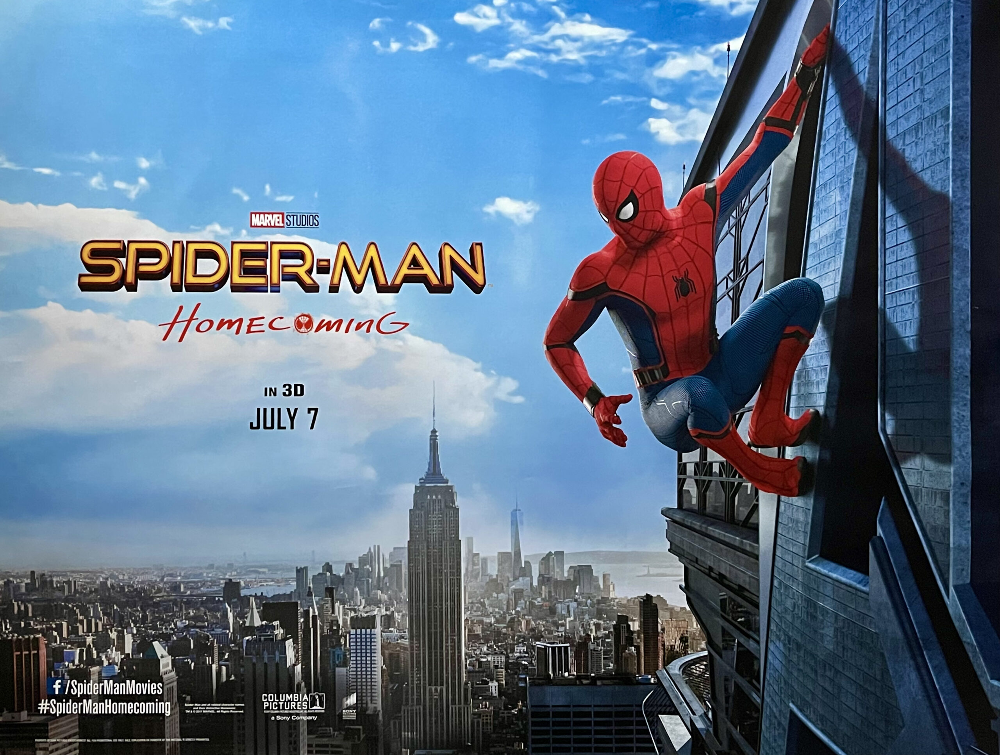

Marvel Movie Spectator
Elijah's favorite movie is "Spiderman-Home Coming" this was the film that introduced spidey into the marvel cinematic universe!
Digital Artist in training

Elijah has enjoyed drawing traditionally and is also interested in doing digital artwork, as of now he uses a software called "ibis paint" on his iphone.
RPG Gamer
Elijah has a love for video games especially JRPGS (Japanese Role-playing Games) in particular, some titles he enjoys playing are Persona, Final Fantasy, and kingdom Hearts.
Anime Fan
Elijah is a anime fan of the shonen genre, some titles that he likes to watch are Naruto, Dragonball Z , and My Hero Academia.